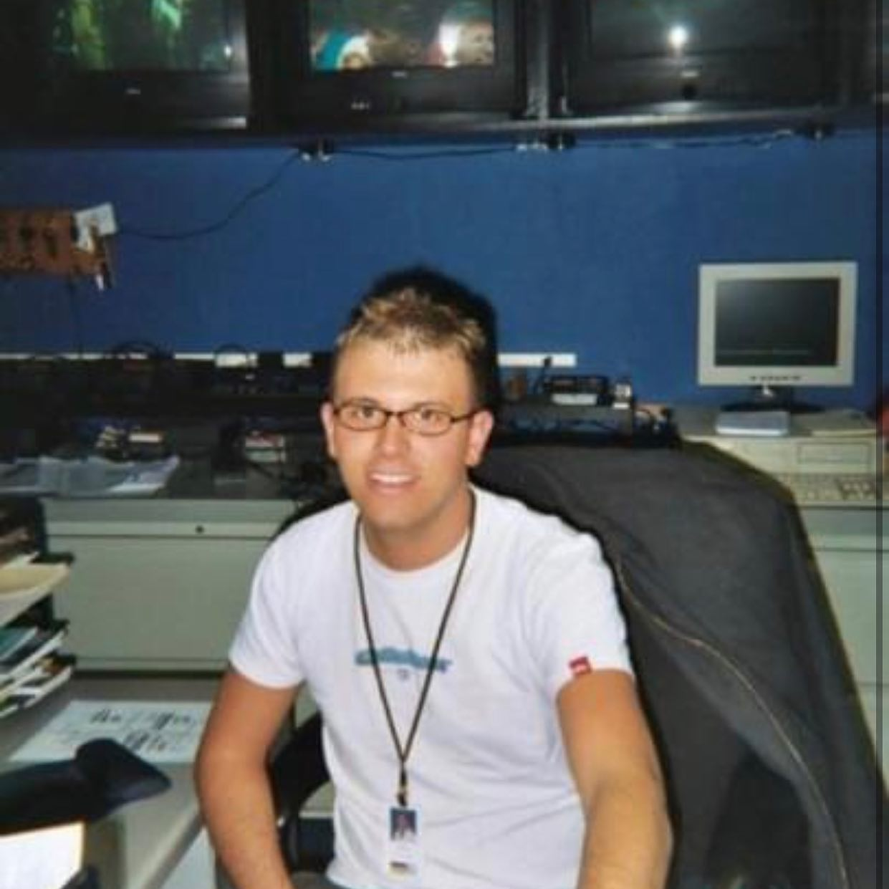
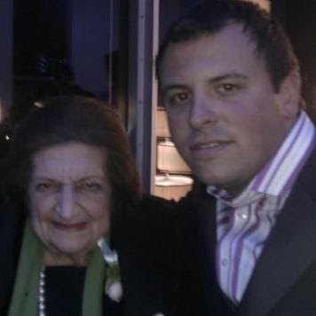

Branded content, before anyone called it that
A revenue product people actually wanted to watch.
eightWest was not a news show. It was a commercial daily program, and news loaned me to the programming department to build it. I conceptualized the show, created its segments, helped design the fee structure sponsors bought into, wrote the content that carried their products without feeling like an ad, and ran the early marketing and social accounts myself.
Nineteen years later it is still on the air. I am still in touch with its executive producer and some of the hosts, the show outlasted my time there because the model was built to be handed off.
The assignment
The station wanted a daytime show that could carry advertiser money. News lent me to programming to figure out what that show should be, format, segments, hosts, tone and the commercial model underneath it.
The problem to solve
Sponsored television usually announces itself and viewers leave. The show only worked if the segments were genuinely worth watching first, and the product lived inside something people already wanted.
The proof
It launched, it sold, and it is still on the air nineteen years later. Long enough, in fact, that I now know its current executive producer as a peer rather than a successor. A commercial content product that outlives its founder is the only endorsement that matters.
What I actually did
Concept, segments, pricing, marketing, social.
The concept
A daily show about West Michigan life, food, home, health, community, the things people were already talking about. Local enough that no national syndication could copy it.
The segments
I built repeatable formats a sponsor could own without owning the editorial: a chef segment, a home segment, a health segment. Each one a slot with a shape, so the show could be produced daily and sold predictably.
The fee structure
I helped design what sponsors bought and what it cost, segment ownership, integration levels and packaging. Understanding the money is what let me protect the content.
Marketing & social
I ran the early promotion myself and built the show’s first social accounts, in 2007, when most stations had not worked out what those were for.
Why it still matters
I have sat on the revenue side of the content conversation.
Most editorial leaders have never had to price the thing they make. I have. I know what a sponsor is really buying, why integrated content outperforms an interruption, and where the line sits between a partnership worth taking and one that costs you the audience.
That is also why I am comfortable in rooms where content has to earn its keep, membership, underwriting, sponsorship, subscription. The editorial judgment does not change. The business model around it always does.
The Grand Rapids chapter →

Make it worth watching first. The product can live inside something people already want.